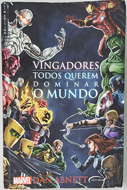

VINGADORES Todos querem dominar o mundo - Dan Abnett
Sobre o livro:
Quantos vilões são necessários para dominar o mundo?
A Hidra desenvolve um patógeno sintético para o qual apenas ela tem a cura. Enquanto isso, a I.M.A (Ideias Mecânicas Avançadas) está prestes a contaminar o suprimento mundial de água com um letal composto nanotecnológico. Ultron dispõe da mais avançada tecnologia da Terra nas pontas de seus dedos metálicos. O demônio Dormammu tem um plano impar para o planeta: reivindicá-lo para si próprio. Alto Evolucionário está reescrevendo o genoma humano, numa tentativa de transformar a humanidade numa raça eugênica de escravos.
TODOS QUEREM DOMINAR O MUNDO. Mas somente os Vingadores poderão salvá-lo. Serão capazes de resistir quando não apenas um, mas muitos desses vilões atacarem ao mesmo tempo? Essa crise está longe de ser mera coincidência. Há alguém por trás desses ataques simultâneos. Uma grande sombra paira sobre os herois mais poderosos da Terra, e, mais uma vez, a raça humana se encontra à beira da aniquilação.
Imagens:
Onde Encontrar?
Estante 01, Prateleira 01, Seção A
Código do Livro
2476
Outras informações:
- Número de páginas: 269;
- Autor: Dan Abnett (1988-);
- Editora: Novo século.